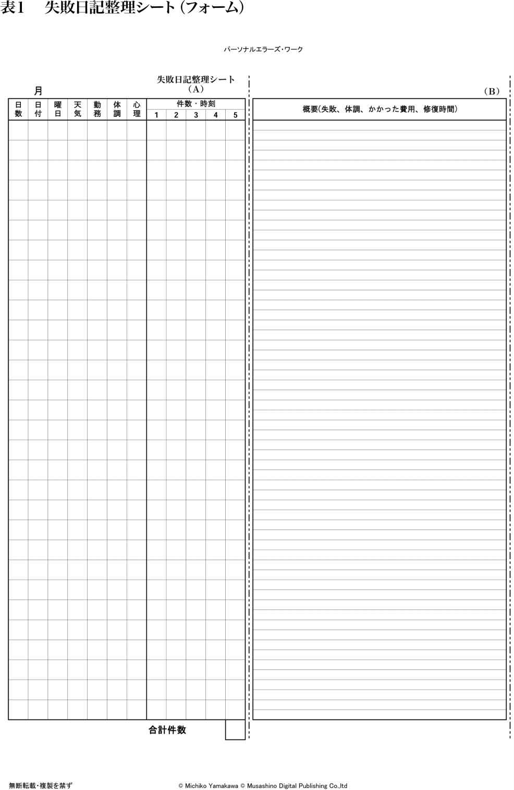

| あなたの楽しい失敗防止に『パーソナルエラーズ・ワーク』 | |
| 山川 みち子 | |
| Musashino Digital Publishing (2014) | |

今、何時ごろでしょうか。今朝目覚めてから、この時間まで「ウワッ大変」とか「あ、しまった」ということは、ありませんでしたか。
例えば、コーヒーをこぼした、寝坊して遅刻をしたというようなことです。わたしたちは誰でも失敗をします。さまざまな種類の失敗を。失敗には、靴下を裏返しにはいているような他愛ないものから、命に関わるような重大なものまであります。
この本は、自分の失敗を減らしたい、防止したいと思っていらっしゃる方のために書き著しました。
わたしは、前はしょっちゅう失敗をしていました。
その失敗の多さに困っていたころ、ふと、「失敗日記をつけてみたらどうだろう」と思い付きました。
学生時代に、夢日記をつけていたことがあって、自分の内面を知るのに、とても役立ったのです。
早速その日にした失敗をつけていきました。
20日ほど経って、それらを並べて眺めてみますと、驚きました。失敗回数の多いこと、また同じような失敗を繰り返しているのです。
一方では、「雨の日は失敗が皆無であること」「木曜日は失敗がほとんどないこと」にも気づきました。そこで失敗には何か「裏」がある、もしかしたら性格や内面性とも関わりがあるのでのではないかと思えてきたのです。強く興味を覚え、これが失敗研究の発端となりました。
そのころ医療機関に勤めており、医療ミスに敏感なスタッフたちが快く協力をしてくださって、この個人の失敗を減少させ、防止するシステムである「パーソナルエラーズ・ワーク」ができました。
本書を読まれた方は、「失敗についての考え方」が大きく変わるでしょう。
また「パーソナルエラーズ・ワーク」を実践なさった方は、「失敗の激減」を実感なさることでしょう。
「失敗って何ですか」ってお尋ねしたら、「失敗は失敗でしょう、成功の反対」って言われそうですね。
辞書には「やってみたが、うまくいかないこと。しそこなうこと。しくじり」とあります。また「失敗学」の創始者、畑村洋太郎氏は失敗を「人間が関わったひとつの行為が望ましくない結果を生ずることを指す」と定義しています。
成功のための書物は沢山出されていて、わたしも随分読みました。他方、失敗はマイナスのイメージが強いのか、書物は少ないですね。
二つを比較してみると、「成功」に共通しているのは、長い時間や期間がかかるということ、地味な努力、忍耐を要するということです。
それに対して、「失敗」は一瞬、アッという間に起こることが多いのです。ジワジワと時間をかけて、失敗していく類のものも確かにありますが、短時間にアッという間に起こるというのが、ずっと多いのです。
ですから「失敗」は怖いのです。長い間コツコツと努力して獲得したものを、一瞬で失うとしたら、あまりにも辛いではありませんか。これは避けたいですね、なんとしても。どうすればいいのか。それは、「失敗」というものの実態を正確に知り、防止のノウハウを掴むことだと思いました。
特に手っ取り早く、効率よく行うには、自分の失敗傾向、失敗特徴を知ることです。一般論やどこかのＡさんの失敗例では、実感がわかず、役に立たないのです。
この「パーソナルエラーズ・ワーク」は、個人―― 『まさにあなた自身』 ―― に 限定した「失敗減少、防止」です。是非やってみてください。とても面白いですから。
この章では、本書で用いている「言葉」について説明をします。「面倒だ」とか「早く失敗を減らし、防止に入ってほしい」という方は、第３章からお読みください。
１．本書での「失敗」とは
「パーソナルエラーズ・ワーク」での「失敗」とは、客観的失敗と主観的失敗を指します。
例えば、お皿を落として割ってしまった、会社に遅刻したなどは、客観的事実ですから客観的失敗になります。
主観的失敗とは次のようなものです。ある上司が部下を叱責した後で、「強く言い過ぎた。あんなに叱るべきではなかった」と感じれば、叱り方失敗 ということになります。
しかし、「あのくらい言って、あの人にはちょうどいいのだ」と思えば、失敗にはなりません。
つまり、主観的なもの、内面的なことについては、 その当人が失敗と感じたこと、思ったことが失敗になります。
これらを、かなり頻回に取りあげる人もいますし、ほとんど触れない人もいます。自分が失敗と思うものを減少、防止するのが目的ですから、それでいいと思います。
また本書では、特定の失敗については扱っていません。 「特定の」というのは、例えばダイエットとか禁煙、失恋といったものです。
２．パーソナルエラーズ
この「パーソナルエラーズ（Personal errors）」という言葉は、特に個人における失敗（群）
ということを表現したくて、2006年、著者山川が造語したものです。
似た言葉で、よく知られている語に「ヒューマンエラー」があります。これは「人間というものは、こういうときに事故を起こしやすい」とか「自動車事故のXパーセントはこういう状況下で発生している」というように、事故やミスを「人間全体に共通するもの」という観点で捉えています。
これに対してパーソナルエラーズは、一個人に焦点を当てています。「山川（著者）はこんな類のミスが多い」とか「山川は金曜日に失敗多発傾向がある」というような具合です。
パーソナルエラーズはヒューマンエラーとダブるところもありますが、あくまでも一個人を対象としており、他者との比較はしません。
自分の失敗を減少、防止していくためには、自分自身に取り組めばいい と考えます。
３．パーソナルエラーズ分析
「パーソナルエラーズ分析」とは、パーソナルエラーズ・ワークの骨子、理論です。
一連の作業システムになっており、データ収集（失敗日記をつける）、分析（数量、内容）、防止策立案、実行、再データ収集、比較、習慣化の過程となっています。
通常はクライアントとサポーターがペアになり、面談を交わしながらの共同作業となります。読者の皆さんには、わたし（著者）がサポーターとなり、手順の進行を援助します。
この作業は自己変容過程でもあり、個人が自発的に臨み、自分を探し、気づき、納得する必要があります。
したがって、自発的に「失敗を減らしたい」と思っていらっしゃる方にお勧めします。「あなたはミスが多いから、やってみなさいよ」と奥さんに言われてとか、上司に命令されてという方には向かないでしょう。
４．パーソナルエラーズ・ワーク
「パーソナルエラーズ・ワーク」は、パーソナルエラーズ分析に基づいて行われる全作業を指します。クライアントの作業やサポーターの作業、そして両者が共同で行う作業もワークに含まれます。
「パーソナルエラーズ・ワーク」とは、個人（パーソナル）の、失敗群（エラーズ）を、減少防止する作業（ワーク）、つまり「個人の失敗減少防止の作業」のことです。少し長いので「パソエラ」（通称）と呼ぶこともあります。
１．さまざまな失敗
本書では「失敗」を次のように分類しています。
・他愛ない失敗
「シャツを後ろ前に着てしまった」とか、「次男を呼ぼうとして、長男の名前を口にした」など、ほとんど他人に迷惑をかけない小さな失敗。
・ちょっと困った失敗
「スーパーのレジで財布を忘れてきたことに気づいた」とか「友人を誘い、美術展に出かけたら休館日だった」など、多少、他人に迷惑をかけたり、損失があったりする失敗。
・重大な失敗
「階段を踏み外して、頭を強く打った」とか「大金を引き出したが、どこかに忘れてきた」など、損害が大きな失敗。
・してはならない失敗
「寝タバコをして火事になり、自宅と隣家が全焼した」とか「ベランダの手すりに置いていた鉢植えが落ちて、下を歩いていた人に当たってしまった」など、特に他人に大きな損害を与える失敗。
・職業上のしてはならない失敗
「守秘義務を怠って、個人情報を部外者に話してしまった」とか「テスト直後の答案を紛失してしまった」など、個別の業務特有の失敗。
２．失敗の原因
失敗には必ず原因があります。それらは、以下のように分類できます。
- 不注意であったため
- 忘れたため
- 確認をしなかったため
- 準備が不十分であったため
- 業務認識の甘さのため
- 危険意識の乏しさのため
- その他（原因が判然としないもの）
では、失敗の原因を一つずつ詳しく見ていきましょう。
ⅰ．不注意で起こる失敗
不注意 は意識、性格や行動傾向に起因しており、個人の内的な事由からくるものと考えられます。一言で不注意と言っても、次のように分けることができます。
まず１つは、注意力が散漫で、意識が外の対象に向かわず、内面に入り込んでいる状態です。これは、さらにａ，ｂ2つに分かれます。
ａは内面活動が激しく、外部まで手が回らない状態で、例えば、ショックなことがあったり、驚いたりしたときです。階段を踏み外すとか、歩行中に人とぶつかるなどしやすくなります。
ｂは内面も外部への意識活動も共に不活発な状態で、例えば、疲れていたり、飽きてしまったときです。
居眠り運転、指示の取りちがえなどをしやすくなります。
「落とし物」はa、bどちらかでもしやすいです。
２つ目は、行為行動が先走ってしまい、考えが及ばない状態です。つまり、考えずに行動してしまうことを指します。そそっかしかったり、衝動的傾向の強いタイプに起こります。
図1
ⅱ．忘れによる失敗
忘れ （「失念」、「忘却」、「健忘」などの言葉もありますが、本書では「忘れ」「忘れる」を使っていきます）は、覚えていたことを持続する力（保持力）、または思い出す力（想起力）などが不全な状態です。「薬を飲むのを忘れた」「お礼を言うのを忘れた」など、「忘れ」による失敗は、どなたもきっと多いことでしょう。
忘れる「対象」は、事柄と物品に分けることができます。事柄の場合には「薬を飲むのを忘れた」というように、やろうとしていたことや、なすべきことを思い出せないのです。物品の忘れには、持って行くべき物を忘れる（忘れ物）、持ち帰るのを忘れる（置き忘れ）、どこに置いたか分からなくなる（置き場所忘れ）などがあります。
図２
ⅲ．確認不足による失敗
確認とは次の2つを指します。
つまり、確認不足
とは、「はっきりしないものを不明確なままにしておくこと」「作業の仕上げの段階で、見直しをしないこと、または不完全な見直しであること」と言えます。
図3
ⅳ．準備不足による失敗の防止法
準備とは何か事を行うにあたって、それがうまくいくように、物品や体制作り（計画・手順・流れ）を事前にしておく作業のことです。
準備不足 をカレーライス作りを例に見てみましょう。物品の準備不足とは、包丁や鍋などの調理器具を用意しておかないことです。体制の準備不足とは、ご飯を炊かずにカレーを作り終えてしまったというようなことを指します。
図4
ⅴ．業務認識の甘さによる失敗
業務認識の甘さ による失敗とは、例えば食材、食品、料理を提供する仕事に従事する人が、食品衛生の知識の乏しさや不注意によって引き起こす食中毒が挙げられます。
また、医療機関や交通機関でのミスは命と直結する場合が多くなります。
ⅵ.危険意識の乏しさによる失敗
「アパートの２階のベランダの手すりに置いてあった鉢植えが強風で落下。下を歩いていた人に大ケガをさせた」
これは危険意識の乏しさ による失敗の一例です。花がきれいなので、通りを歩く人にも見せてあげたかったのかもしれません。しかし、「鉢植えが落ちたら大変だ」という危険意識が欠けていたと言わざるを得ません。
３．失敗の原因のまとめ
ひとが失敗する理由（わけ）として、個人的事由と心構えによるものとに分けることができます。
個人的事由によるもの
不注意......意識、性格、行動傾向に起因。
忘れ.........記憶の保持力、想起力の不全。
心構え（考え方や普段からの習慣、癖）によるもの
確認不足
準備不足
職業認識の甘さ
危険意識の乏しさ
個人的事由と心構えによるものが、絡み合って起こる失敗もあります。
ここまで、読まれていかがでしたか。パーソナルエラーズとか失敗の起こる訳とか、何だか疲れたという方もいらっしゃるでしょう。ここらでちょっと一休みしませんか。コーヒーでも飲みながら、読んでください。
といっても、やっぱり失敗に関するものですが......。ブラームスのお話です。
作曲家ヨハネス・ブラームス（1833−1897）には、こんな失敗談があります。彼は長年に渡って、クララ・シューマンとその家族と親交がありました。クララは当時著名なピアニストで、作曲の恩師ロベルト・シューマンの妻でした。シューマンが若くして世を去った後、ブラームスはクララや子供たちを支え続けたと言われています。クララとは互いに深い信頼感、敬愛の念を抱き合っていたようです。
そのクララが亡くなったとき、ブラームスはお葬式に出席できませんでした。出かけることは出かけたのですが、行き先を間違えてしまったのです。行き先を間違えるなんて、なぜ、そんなことが！
生涯の女性といえるクララとの最後の別れに。
読者の皆さんは、どうお考えになりますか。気が動転していたため？......そうかもしれません。しかし、こういうことも考えられるのです、行きたくなかったということが。
つまり葬儀に参列すれば、棺に横たわるクララを、自分の目で直視せざるを得ません。それは、耐え難い辛さだった。だから行きたくなかった。自分の目で見ていなければ、クララは死んだと思わなくてよいのです。言い換えると「クララは生きている」と思うことができるのです。そう思える余地を残しておきたかったのではないでしょうか。［行き先の間違い］には耐え難い苦痛の回避と、「死んだんじゃない、生きている」と思いたいという願いが込められていたのかもしれません。
現実の事実を認めない（受け入れない）ことを、精神分析では「否認」と言います。その事実があまりにも辛い、耐え難いときに自然に、無意識に働き出して心を守る働きの一つです。ブラームスの失敗は、気の動転か、否認か、その合作か。もし、彼が生きていて、尋ねることができたとしても、本人にも分からないでしょう。無意識の世界で行われたことは、本人にも分からないのです。
しかし、その後に行われた埋葬には、どうしても参列せざるを得ませんでした。居たたまれなくなったブラームスは、傍の木立の中に身を隠したと言われています。
生涯独身であった彼が亡くなったのは、クララの死から一年も経っていませんでした。
◆フロイトの失敗の解釈
「失敗と無意識の関係」については興味深い説があります。
ジークムント・フロイト（1856−1939）という精神分析の開祖は、1901年に『日常生活の精神病理学』という書物を著わしています。そのなかでフロイトは「言い間違い」や「聞き違い」、「置き忘れ」や「物忘れ」のような日常生活における些細な失敗を、無意識と結びつけて説明しようとしました。ほかには、「聞き間違い」「読み違い」「紛失」「記憶違い」も挙げています。
現実には表現することが憚（はばか）られるような思いや願望を持っていたとします。それらは普段は心の奥にしまってあるのですが、ふとした折に（関連がありそうな事柄に触れたときなど）その願望や思いが出てしまう。それが上記のような失敗という形で表れると考えたのです。つまり、失敗のほうが本音という訳です。
著者の周りでも、最近こんな「言い間違い」がありました。
あるお嬢さんがお見合いをしました。料理が運ばれ、箸を取った途端「ご馳走様でした」と言ってしまったのです。これにはみんなビックリ。本人も驚いたそうです。実は彼女には好きな男性がいて、お見合いをしたくなかったのです。無理に親戚に勧められて、断りきれず臨んだのでした。
早く済ませて帰りたかったんですね。『ゴチソウサマ、モウタクサンヨ、カエリタイ』という訳なのですね。
コーヒーブレークの一休みが少し長くなりました。第３章に進みましょう。
１．失敗日記をつけて、データを収集しよう
失敗日記とは、失敗内容や感想、失敗した日時や天候、その日の体調などを記録するものです。失敗の減少、防止には、まず自分の失敗の傾向を知ることからはじめましょう。
まず、ご自分の書きやすいノートを一冊ご用意ください。そして、ページの中央に縦に一本、線を引き、次の項目を書き込みます。
中央の線の左半分には１〜５を、右半分には６、７の項目を書き込んでください（記入例参照）。
失敗の多い日や詳しく書きたいときは、 右半分のスペースを活用したり、次ページを使用してください。
同じ日に複数の失敗をした場合、二つ目以降は３〜５を省略します。その場合、「６．失敗内容」は、「６-②」「６-③」のように記入します。各失敗に時刻、感想も記入します。
失敗のなかった日は、「１．月日、曜日、勤務状況」「３．天気」「４．体調」「５．心理状態」のみを記入してください。これらはノートの余白の部分に書いても結構です。
また、今日は失敗はなかったと思っても、数日経ってから思い出すことがあります。その場合は後で整理しやすいように赤ペン を用いて、思い出した日のスペースに記入してください。
さて、ここで一つ大事な約束事があります。それは、全部の失敗を書く ということです。仕事上のこと、プライベートなこと、些細なこと、恥ずかしくなるようなことも、全てです。
では、まずは失敗日記を一週間 つけてみてください。
一週間経ちました。そして「とても大変だった。自分には向かない」と思った方は、無理をしないほうがいいでしょう。しかし、また同じ失敗をしないように、その都度対策を考えていってください。そうすると失敗は減っていくことでしょう。
「平気だった、大丈夫」という方は、この一週間を含めて30日間（１クール） 続けてつけてみてください。分析には最低１クール必要です。
図5
２．1クールのデータを整理しよう
さて、今度は日記のデータを整理していきます。
Ａ．準備作業
表１「失敗日記整理シート」、表２「数量チェックリスト」、表３「失敗内容分類」（２枚組）を使用します。
シートフォームは、手書き用とエクセル入力用の2種類があります。いずれもインターネットサイトに掲載していますので、ダウンロードして、ご用意下さい。
http://ms-dp.com/books/pasoera/

Ｂ．数量チェックリストへの記入
失敗日記に記入した内容を、表１「失敗日記整理シート」に書き写します。
記入の仕方は以下の通りです。見本１もご参照ください。
【日付、曜日、天気】は全部記入してください。
【勤務】は、夜勤や出勤が不規則な方のみ、記入してください。
【体調】は、｢好調｣は◎を、「普通」は「○」を、｢不調｣には×を書き、内容（頭痛、風邪、生理、寝不足など）も記入します。
【心理】は、失敗直前の気分や気持ちに基づいて、｢好調｣は◎、「普通」は○、｢不調｣には×を記入してください。
【件数・時刻】は、一つ目の失敗は１に記入します。二つ目以上は同様に。六つ以上は欄外に記入します。
【概要】では、件数は通し番号にし、失敗内容を要約して記入します。
- 一番下に失敗件数の合計を入れてください。
- 後日、失敗があったことに気づき、赤ペンで記入した部分は、このとき本来の日付の位置に書き込んでください。
Ｃ．表２、表３の作成
次は、記入済みの「失敗日記整理シート」をカットします。件数・時刻と概要の間の点線に沿ってハサミを入れ、切り離します。右端の点線にもハサミを入れ、切り取ってください。
そして左側を表２「数量チェックリスト」の空欄に、右側を表３「失敗内容分類（1）」の空欄に貼り付けます。
Ｄ．表２「数量チェックリスト」右欄への記入。
記入の仕方は以下の通りです。
- ①合計件数を記入する。「 ／30」とある右側には合計件数を30で割り、1日の平均失敗数を出す（小数第３位を四捨五入する。以下同様の処理をする）。
- ②失敗のあった日の合計を記入する。それを30日で割り、％を記入する。
- ③失敗のなかった日の合計を記入する。それを30日で割り、％を記入する。
- ④１日のうちで失敗件数の最も多かったのは、何件で、何月何日の何曜日であったかを記入する。
- ⑤各曜日が何日あるかを数え、分母の欄に記入する。各曜日ごとの失敗件数を数え、分子の欄に記入する。割り算をして％を記入する。
- ⑥失敗の多い順に曜日を書き並べる。次に最多曜日と最少曜日の件数を記入する。
- ⑦晴れた日に発生している失敗件数を記入する。晴れた日の合計で割り、％を記入する。曇り、雨、雪の日も同様に算出する。（手書きの場合は、先に鉛筆で「晴れ」の日に全部〇をつけるとやりやすい）
- ⑧体調の好調（◎）であった日の合計数を書き、それらの日に発生している失敗総件数を数え、％を算出する。普通（○）であった日、不良（×）であった日も同様。
- ⑨心理状態の好調（◎）であった日の合計数を書き、それらの日々に発生している失敗総件数を数え、％を算出する。普通（○）であった日、不調（×）であった日も同様。
- ⑩ａには勤務日の合計日数を、ｂには休日の合計日数を記入する。ｃには全勤務日中の失敗合計数が何件かを記入する。そしてｃをａで割り、％を算出する。これは勤務日中の平均失敗数である。ｄには全休日中の失敗合計数が何件かを記入する。そしてｄをｂで割り、％を算出する。これは休日中の平均失敗数である。
- ⑪時間帯はa〜dは勤務日、e〜gは休日で、各合計件数を記入する。
Ｅ．表３「失敗内容分類」右欄への記入
概要欄の１の失敗から順次、右側に挙げた原因と考えられる項目へ振り分けていきます。原因が二つ以上考えられる場合は、主原因と考えられるほうに振り分けてください。
このとき、番号と短く要約した内容を記入します。例えば「１電話のかけ間違い」は、「１電話」、「２皿を割った」は、「２皿」といった具合です。
原因の項目の脇の「 ／ 」には、その項目が原因で起こった失敗件数（分子）と全失敗件数（分母）を記入し、％を出してください。
<例>
失敗がある項目に集中して、書き切れない場合は別紙に記入し、貼り足してください。
２枚目は次のように記入します。
【重大なエラー】
30日間で最も大きな失敗と思われるものを書いてください。
【他への迷惑】
他人へ迷惑をかけてしまったと思われるものを選び、程度の大きい順に記入します。
【ショックの度合】
ショックの強いものから順に書いてください。特になければ空白のままで。また４つ以上あったら、それも記入してください。
【かかった費用】
失敗を埋め合わせるためにかかった合計額を記入してください。最高額はいくらで、何の失敗かも書いてください。
【修復時間】
失敗で引き起こした状況を、元に戻すために要した時間を書いてください。これは大体で結構です。また、最も長くかかったのは、何の失敗かも書いてください。
３．データを解釈し、対策を立てよう
これで２種類の分析用紙が完成しました。今度はその数値の意味を解釈していきましょう。同時に減少・防止対策も立てていきます。対策は、実行可能であることが条件です。
新たなノートを1冊ご用意ください。失敗日記の未使用部分を利用なさっても結構です。
Ａ．表２「数量チェックリスト」の解釈と対策
まずは表２「数量チェックリスト」を見ていきます。ノートに番号を記入し、一つひとつ、ご自分の数値の解釈を記入していってください。
① 合計件数
きちんとした統計をとった訳ではありませんが、著者の経験では以下のように解釈できます。
10件以下−−少ないほう
11〜20件−−普通
21〜30件−−多いほう
31件以上−−かなり多い
②・③失敗があった日となかった日
毎日のように満遍なく失敗している人は、意識や注意力が散漫で、よく考えずに行動する傾向が強いことが考えられます。
ある時期に集中的に失敗をしている人は、体調、天気、情緒（心理）などに影響されやすいことが考えられます。
④１日の最多件数
１日に３件以上は多いですね。その日はどんなことがあったのか、失敗日記を見てみましょう。また、前夜に変わったことはありませんでしたか。ほかにも３件以上の日があったら、同様に見てみましょう。
きっと納得のいく理由が見つかり、対策を立てるときに役立つはずです。
⑤・⑥ 曜日
人によっては、明らかに、この曜日は多いとか少ないということがあります。失敗の多い曜日については失敗内容も見てみましょう。
⑦ 天気
これは信頼性の高い数値とはいえないかもしれません。しかし、「雨の日の失敗は、皆無」というような顕著な数値は一考に値すると思われます。
⑧ 体調
体調がとても良い日と頭痛や寝不足などの日では、失敗の差異はどうでしょうか。
⑨ 心理
心理的にとても良い状態の日と落ち込んでいたり、ショックなことがあった日とで差異はありますか。
一般的には心理状態が「不良」の日は、失敗が多くなります。
⑩ 勤務日と休日
一般的には、休日のほうが失敗件数が少ないと思います。逆に休日のほうが多い場合は個々の事情によるものか、気の緩み（注意力や関心が外部に向かわず、自己の内部に向かっている状態）が考えられます。
⑪ 時間帯
ａが多ければ、前夜の準備不足、朝に弱いタイプであることなどが考えられます。
ｂが多ければ、勤務中の外部への注意力が散漫であること、朝に弱いタイプであることなどが考えられます。
ｃが多ければ、注意力散漫、食事量の摂り過ぎによる眠気、活動性、意欲の低下などが考えられます。
ｄが多ければ、疲労、安堵感による不注意などが考えられます。
ｅ、ｆ、ｇは休日ですので、大部分の方は家にいるか、仕事以外での外出をしていると思われます。時間帯によって著しい差があるときは失敗日記を確認して、どんなときに失敗が多いのか見てみましょう。
自分の失敗の傾向が分かったら、対策を考えて、それをノートに書きましょう。
Ｂ．表３「失敗内容分類」の解釈と対策
あなたは、どの原因による失敗が多かったでしょうか。ある項目に集中していますか。それとも平均的に分散していますか。集中している項目が、あなたの主な失敗原因と思われます。分散している方は、各方面から考察していきましょう。
【不注意】
これが多かった方については、二つのタイプが考えられます。
一つは、注意力が散漫、集中力が途切れるタイプ。この失敗を減らすには、とにかく、注意を外部へ戻してください。
ショックなことや心配事があるとき、疲労、睡眠不足のときは「危ないとき 」と自覚して、行動は最小限に抑え、慎重に振る舞いましょう。それが不可能なときは、しばらくは何もしないというのも一つの手段です。
もう一つは、良く言えば元気、別の言い方をすれば、そそっかしい、挙措が荒々しいタイプです。衝動的行動をとる人もいます。このタイプの失敗を防ぐには、行為行動をとる前に、瞬間的に行動予測をする ことです。
瞬間的行動予測とは、例えば「ランチで隣席の人の水を飲んでしまった」という失敗は、「水を飲みたい」と感じたときに目の前のコップに即、手を伸ばさず 、まずは「自分のコップはどれだったっけ？」と考えましょう。はっきりしなければ「これ、わたしのかしら」と聞けば、教えてもらえます。これでこの失敗は避けられたのです。
また、不適切な発言、失言も「こう言ったらどうなるか」と一瞬、予測をすれば防ぐことができます。
言葉による失敗は恐いものです。
図6
【忘れ】
対策としては、まずオーソドックスに メモや手帳の活用 が挙げられます。何かしている最中に新たなスケジュールが入ったら、後回しにするのではなく、すぐに手帳に記入するようにしましょう。
そして、手帳は必ず毎朝見ます。スケジュールを把握しているつもりでも、必ず見る習慣をつけましょう。
また、家族や職場の人にもスケジュールを伝えておけば、「お父さん、今日歯医者さんよね」とか「２時にＡ社の営業マンに会いますよね」などと言ってもらうこともできます。これも「忘れ」を防ぐための方法の一つです。
置き忘れに関しては、その場を去る直前、自分のいた周囲を見廻してチェックしましょう。電車なら網棚、喫茶店ならテーブル周りなど。ちょっと小首を傾け、振り返って見る。いわゆる後見癖 （あとみぐせ）です。これで、置き忘れは解消。
この癖のない方は、意識的にしてみてください。
続けていると習慣化します。
見返りみかちゃん
絵 丸池こう子
忘れを防ぐには、記憶力を鍛えることも重要です。
そのためには、沢山覚え、しょっちゅう思い出してみること です。記憶は引き出しのついた小箱のようなもので、小まめに出し入れしていないと、開きにくくなってしまいます。

図7
【確認不足】
何かことを始めるとき、それについて不明確な点があったら、放置しないことです。確かめてから動きましょう（電話、ネット、スマホ等で）。
月日、曜日、時刻、概要等は、約束した際、口頭で繰り返す癖をつけてください（反復法 ）。
作業の終わりにも確認します。試験のとき提出前に見直しをすると、一つ二つのミスに気づくことがありますよね。不注意や忘れ、準備不足によるミスがあっても、最後の確認が充分であれば、防止できることが多いのです。この確認を作業過程の一部として、最後に行う習慣をつけてください。確認技法 は広く使え、かつ強力な防止法です。
図8
【準備不足】
準備不足は「後始末」に関係していることもあります。例えば、定期券をコートのポケットに入れたままにして、翌日は暖かくてコートを着ずに出勤してしまうと、改札で困ってしまいます。この失敗をなくすには、定期券は定期入れや財布など、必ず所定の位置に戻しておく ことが大切です。これは後始末であり、明日の準備でもあります。
準備をするときには、必要なものをリストアップすることも有効です。例えば、外出に必要なアイテムを下のように紙に書き出してみましょう。
これを忘れないようにする方法があります。それは物品の頭の文字をつなげて、意味のある文章を作ってしまうことです。（呪文技法）
実際にやってみましょう。アンダーラインの部分をつなげて読むと「メガサイハンティス」となります。これでは意味をもちませんが、「メガサイハンティス、メガサイハンティス......」と繰り返していると「目がサイパンです」と聞こえてきませんか。
これでも意味があるとは言えませんが、覚えやすくはなりました。お出掛けの前に「目がサイパンです」と心のなかで言いながら、バッグにそれぞれの品を順々に入れていくと、スムーズにもれなく収まります。実際はアイテムがもっと多く、もっと長い語になるでしょう。使いやすく、好きなように作ってください。体制作り（手順、運び）も十分に検討し、紙に書いていきましょう。
図9
【業務認識の甘さ】
これは、各職場でそれぞれ厳しく言われていることでしょう。１回でもミスをしている人は、自分の業務内容を全部書き出してみてください。そして、自分のしている仕事の特性を理解し、自分の失敗が職場や社会にどんな影響を与えてしまうのか、しっかり認識する必要があります。
業務中の失敗の原因としては、睡眠不足、食事量過多、体調不良、心配事などによる不注意も考えられます。体 調管理は仕事の大事な一部 と捉え、睡眠や食事量をしっかり調節するようにしましょう。
また、心配事を仕事場に持ち込まない ようにすることも大切です。仕事についたら、頭を、心を切り替えることが肝要 です。どうしても心配でたまらないことがあるときは、時間休をとるとか休暇をとって、早退したほうがいいかもしれません。
図10
【危険意識の乏しさ】
日常のわたしたちの身の周りに「危険」は沢山あります。例えば駅のホーム。何らかの力で、押されて線路へ落ちたところへ電車がきたら......。また、自転車で道の角を曲がったら、大型トラックが猛スピードで走ってきて、あわや......。これは、マニュアルで対処するというより、場面場面で予測して対応していきましょう。
【重大なエラー】
30日間で最大のエラーはどんなことでしたか。それは、取り返しのつかないことでしょうか。それともリカバーできることですか。それについて、今はどう思っていますか。
人間関係か、金銭か、事故の誘発、ケガ、人命に関わるものか、あるいは純粋に自分の心のなかだけの問題なのか。原因、状況の分析と対策を充分に行ってください。
【他への迷惑】
これは辛い項目ですね。自分のした失敗が、自分以外の家族や会社やグループなどへ、どのように波及しているでしょうか。迷惑の及んだ人、グループは、そのことをどのように言っているのか、どう捉えているのか分かりますか。関係は修復できていますか。未解決のままですか。
【ショックの度合】
自分の心の問題ですが、自分のした失敗に愕然としてしまったり、穴があったら入りたいほど恥じ入ってしまうことがありますね。二度とその失敗をしないことを肝に銘じ、実行可能な抜かりのない対策を立ててください。
【かかった費用】
失敗のためにかかった最高額や合計額は、さまざまでしょう。ある一つの失敗で、億単位になるケースもあるかもしれません。
書き出したものを見て、失敗のために、こんなにお金を使っていたのかと驚かれるかもしれません。ほんのちょっと気をつけていれば、その支出がなかったのに。しっかり対策を立てましょう。
【修復時間】
合計を見て、「えーっこんなに」と思われるのではないでしょうか。ちょっとした不注意で、ケガをして病院通いとなれば、通院時間、待ち時間と結構時間をとられてしまいます。もったいないですね。
ここで絶対失敗が起こらない、起こり得ない方法をお伝えします。それは、当たり前技法 と呼んでいるもので、例えば、「飲酒運転」は飲酒しなければ、起こり得ないし、「約束を破る」のは、約束をしなければ、破ることもないのです。「なあんだ」と思うかもしれませんが、最も確実です。
この至極当たり前 の方法は、疲労時や大きな仕事を控えているときなどには非常に有効です。
４．対策を実行しよう
ご自分で立てた対策案の実行と同時に、以下のことにも心がけてください。
Ａ．習慣化への取り組み
失敗防止の「習慣、癖」を意識的に続けていき、身につけてください。それらは、前述の瞬間行動予測 、手帳を毎朝見る 、後見癖 、反復法 、確認技法 、当たり前技法 などです。
Ｂ．予測力の強化
これまで幾つかの防止法を述べましたが、実際にはもっとさまざまな失敗があることでしょう。それらにいちいち対応していくには、予測力 を働かせてください。
例えば、電気ストーブのコードが床の上に伸びているのを見て「ア、子供が足を引っ掛けて転ぶかも知れない」と思ったとします。これが予測です。そしてコードを部屋の隅を這わせるとかストーブの位置を変えるなどの対応をして防止します。予測力をつけましょう。
５．２クールに取りかかろう
Ａ．日記復活
多くの方は、１クールの全過程が終わると、失敗が激減するので、「もう日記をつけなくても大丈夫」と言います。一方で、このワークがとても面白くなって、引き続き２クールに入る方もいます。その場合はすぐに失敗日記をつけ始めてください。つけ方は１クールと同様です。
学術的面への活用、応用でしたら、もう１クール、２クールつけて、比較検討するのがいいと思います。
Ｂ．２クール日記分析（数量と内容）
前に行った日記分析と同様に行ってください。
Ｃ．１クールと２クールとの比較......失敗減少の確認
１クールの表２数量チェックリストと１クールの表３失敗内容分類をコピーします。そのコピーの用紙のどちらにも中央に縦にはさみを入れ、カットします。カットした表２数量チェックリストを２クールの表２数量チェックリストの左側にのせます。同様にコピーした表３を２クールの表３失敗内容分類の左側にのせます。それぞれセロハンテープで押さえてください。比較作成図を参照してください。次ページの比較作成図を参照してください。
これで１クールと２クールの比較をします。別紙に数量チェック①〜⑪、内容不注意 〜修復時間 の変化を記入していきます。どなたも著しく改善していることでしょう。ただ皆無にしたいと思われるところがあったら、そこを検討し、実現可能な対策を立てましょう。
ここまで、読んでくださって有難うございます。
いかがでしたか。
「やってみて失敗が激減した」、「パソエラッて面白いわね、人生が変わりそう」 とか 「失敗って、減らしたりなくしたり、自分でコントロールできるものなんですね」 とおっしゃってくださると嬉しいのですが。
わたしは基本的に 〔人は失敗をするもの 〕 と思っています。だから仕方がないのではなく、〔だから対策が不可欠である 〕と考えます。しかも積極的に対策を立てたほうが良いと思います。
なぜならば、失敗をする度ごとに、行為行動に支障が出ます。それが続けば、自分を信頼できなくなることも。
失敗のなかには、人生を狂わせるような悲惨な事故や大きな不幸につながるものもあります。
これらを防ぐ作業に取りかかるには、認識の変換が必要です。失敗はイヤなので、触れまいとするのではなく、自分の失敗はどういうものか、実態を知ろうとすることです。そして失敗をおかさない工夫、減らしていく努力をし続ける。すると「失敗というもの」の扱いがうまくなっていきます。
失敗は勝手に、偶発的にポコポコ起こっている訳ではなく、また神様がいじわるをして、起こしている訳でもありません。
失敗が発生するには、外的条件と表面には見えない経緯があります。それに気づき、何をどうすればよいのかが分かってくると、失敗は自分でコントロールできるものだという考えに変わるでしょう。
どうぞ、あなたの大きな成功や素晴らしい幸福を失うことのないよう、小さな失敗にも目を向けていってください。
パーソナルエラーズ・ワーク
創案者 山川みち子
【参考文献】
『だから失敗は起こる』著：畑村洋太郎 日本放送出版協会（2006年）
『失敗学のすすめ』著：畑村洋太郎 講談社文庫
『人はみな草のごとく』著：ひのまどか リブリオ出版
『フロイト著作集4 日常生活の精神病理学他』著：フロイト 翻訳：懸田 克躬 人文書院
【著者紹介】
山川みち子（ペンネーム）
心理臨床家
長年、大学病院の精神科医療に携わり、心理テストやセラピイを行う。
現在は、認知症予防と「失敗防止トレーニング」に力を入れている。認知症予防は自ら教材を開発し、効果を上げている。本書『パーソナルエラーズ・ワーク』は誰にとっても身近な日々の失敗を減少、防止するという意図で創案。
失敗を内容と数量の二側面から捉えている。『パーソナルエラーズ・ワーク』の個別トレーニングを実施。
精神医学、心理学の専門書（共著）多数。
趣味：童話を読むこと、書くこと。
あなたの楽しい失敗防止に
『パーソナルエラーズ・ワーク』
発行日：2014年12月5日 初版発行
著者：山川みち子
編集：高橋恵治、村田亘
装丁・DTP：Mio Silvey
イラスト：丸地こう子
発行人：牛田肇
〒180-0004 東京都武蔵野市吉祥寺本町1-26-4
i-office吉祥寺
電話 0422-28-4331（i-office吉祥寺）
http://ms-dp.com
ISBN978-4-907591-06-9 C2047
©2014 Michiko Yamakawa
本書のコピー、スキャン、デジタル化等の無断複製は著作権法上の例外を除き禁 じられています。